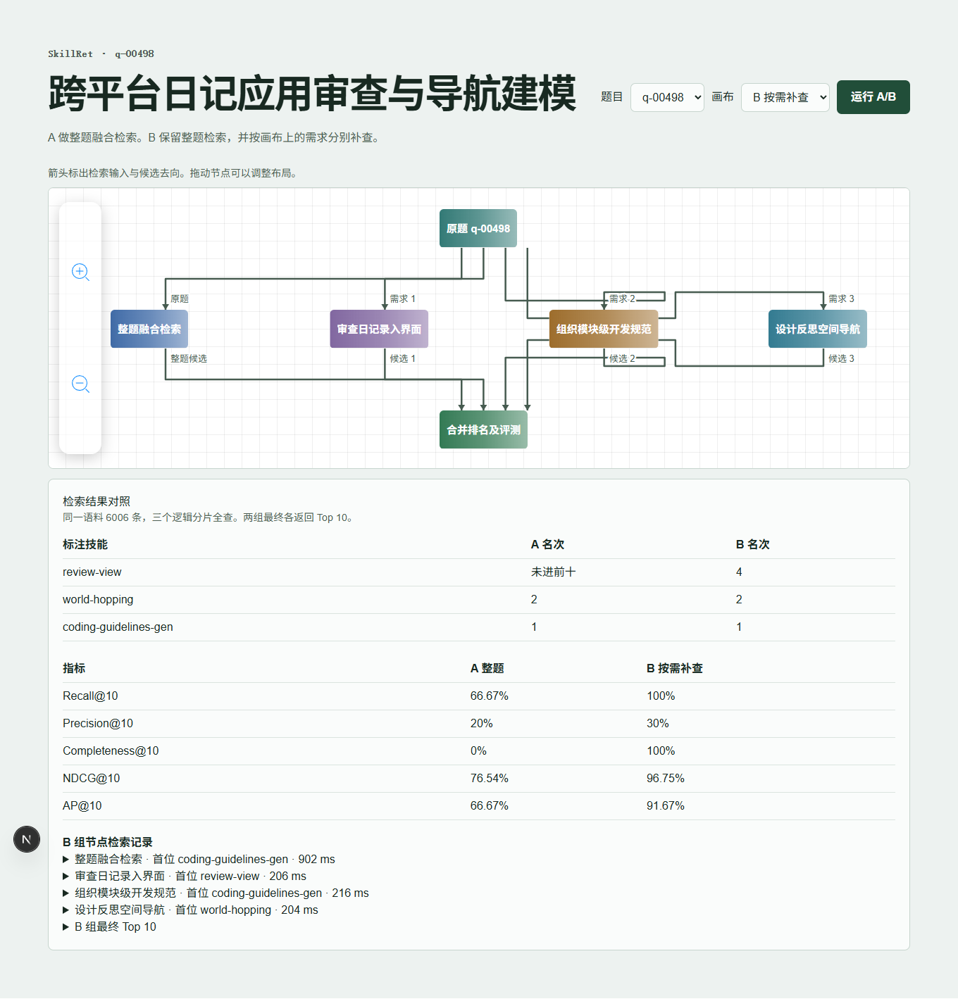

q-00498 跨平台日记应用审查与导航建模
review-view 在界面审查分支排第 1，最终排第 4。原先命中的另外两项均保留。
A/B 指标
| 指标 | A 整题 | B 按需求补查 |
|---|
| Recall@10 | 66.67% | 100.00% |
| Precision@10 | 20.00% | 30.00% |
| Completeness@10 | 0.00% | 100.00% |
| NDCG@10 | 76.54% | 96.75% |
| AP@10 | 66.67% | 91.67% |
数据集标注技能的名次
| 标注技能 | A | B |
|---|
| review-view | 未进前十 | 4 |
| world-hopping | 2 | 2 |
| coding-guidelines-gen | 1 | 1 |
原题与 B 组各节点
整题融合检索
We have a monorepo called "Meridian" for a cross-platform health journaling app (iOS via SwiftUI, Android via Jetpack Compose, shared Kotlin Multiplatform modules, and a Node.js BFF layer). I need three things done: (1) Review our main journal entry composition views on both platforms — check accessibility labels, VoiceOver/TalkBack support, layout consistency between iOS and Android, test coverage of the view models, and auto-create tickets for any critical issues you find. (2) Generate nested AGENTS.md coding guidelines for each module in the monorepo — detect the languages and tooling per module, ask me about our architecture preferences, and set up Spotless for our Kotlin/JVM modules plus any missing linters for the Swift and Node layers. (3) We're also designing a "Reflection Spaces" feature where users navigate between different journaling modalities (gratitude, dream log, mood tracking, free-write) and we want the navigation graph to enforce that you can only transition between spaces whose "emotional distance" satisfies triangle inequality constraints — essentially treating each modality as a node in a mathematical possibility space where valid paths correspond to truth procedures over the user's journaling history events. We want the transition logic to use Badiou-inspired event ontology so that a new modality only "appears" as reachable when a genuine journaling event breaks the current situation. Can you architect that navigation model, review the existing views, and get the AGENTS.md guidelines scaffolded all in one pass?
- coding-guidelines-gen
- world-hopping
- monorepo-patterns
- agents-md-assistant
- android-development
- knowledge-base-templates
- agents-md
- update-agents-md
- ai-agent-orchestrator
- journey-mapping
审查日记录入界面
Review SwiftUI and Jetpack Compose journal entry screens for accessibility labels, VoiceOver and TalkBack, cross-platform layout consistency, and view-model tests. Record critical issues as actionable tickets.
- review-view
- android-accessibility
- ios-swift-expert
- ios-developer
- axiom-ios-accessibility
- ios-development
- ios-development
- accessibility-testing
- axiom-swiftui-architecture
- jira-issues
组织模块级开发规范
Create nested AGENTS.md coding guidelines for a SwiftUI, Kotlin Multiplatform, and Node.js monorepo. Detect module tooling, capture architecture preferences, and define module-specific checks including Spotless and missing linters.
- coding-guidelines-gen
- agents-md-assistant
- agents-md-generator
- agents-md
- ios-swift-expert
- vibe-agents
- Analyzing AgentScope Library
- agent-memory
- suggesting-tooling
- agent-creation
设计反思空间导航
Model transitions between journaling modalities as a navigation graph constrained by emotional distances and triangle inequality. Expose a new modality only when a qualifying journal event changes which spaces are reachable.
- world-hopping
- glossary-modal-editor
- universal-emotion
- portals-building-guide
- modal-knowledge
- checkpointing-an-iteration
- graph-algorithms
- process-journals
- starting-an-iteration
- emotion-engine
最终候选
A Top 10
- coding-guidelines-gen
- world-hopping
- monorepo-patterns
- agents-md-assistant
- android-development
- knowledge-base-templates
- agents-md
- update-agents-md
- ai-agent-orchestrator
- journey-mapping
B Top 10
- coding-guidelines-gen
- world-hopping
- monorepo-patterns
- review-view
- android-accessibility
- agents-md-assistant
- agents-md-generator
- glossary-modal-editor
- universal-emotion
- android-development
RSI 实测截图
